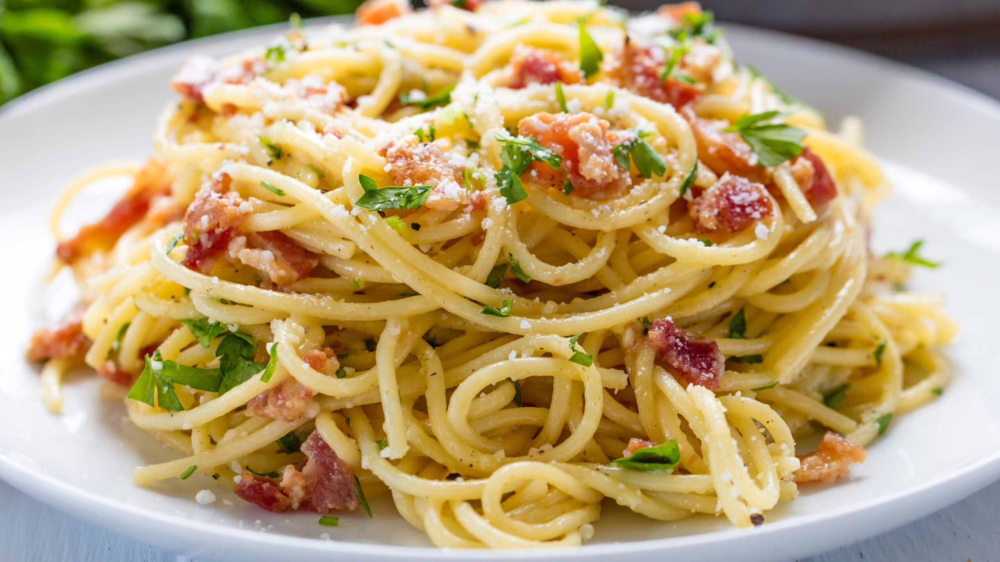

Pasta Carbonara

Carbonara is a Roman pasta dish made with eggs, hard cheese, cured pork, and black pepper.
This classic pasta carbonara recipe is smooth, creamy, and full of rich Italian flavor.
Ingredients
- 1 pound guanciale (cured pork cheek), diced
- 1 (16 ounce) package spaghetti
- 2 tablespoons olive oil
- 3 large eggs
- 10 tablespoons grated Pecorino Romano cheese, divided
- salt and freshly ground black pepper to taste
Steps
- Heat olive oil in a large skillet over medium heat; add guanciale (see Cook's Note). Cook, turning occasionally, until evenly browned and crispy, 5 to 10 minutes. Remove from heat and drain on paper towels.
- Bring a large pot of salted water to a boil. Cook spaghetti in the boiling water, stirring occasionally until tender yet firm to the bite, about 9 minutes. Drain and return to the pot. Let cool, stirring occasionally, about 5 minutes.
- Whisk eggs, 1/2 of the Pecorino Romano cheese, and some black pepper in a bowl until smooth and creamy.
- Pour egg mixture over pasta, stirring quickly, until creamy and slightly cooled. Stir in guanciale.
- Top with remaining Pecorino Romano cheese and more black pepper.